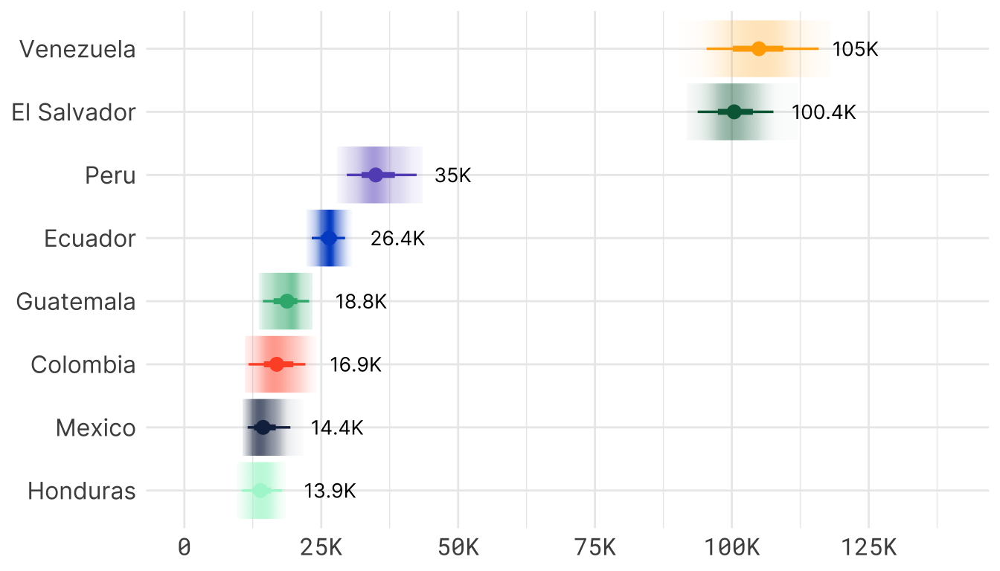

Estimate of the number of clients reach across all countries and service types / sectors, based on IRC Latam’s model. Figures are the median values generated by the model. Hover over the bars to see the numbers.
The IRC in Latin America
üì¢ In FY24, the IRC reached an estimated 331k clients across Latin America.
Why an estimate, and not a definite number?
Counting people reached by humanitarian services sounds straightforward. In reality, it rarely is.
The IRC’s first priority is to deliver help, not to collect data or complete paperwork. If someone comes for support but doesn’t wish to share personal details, we don’t turn them away. In emergencies, collecting demographic information can be impractical, even unsafe. We don’t insist on it. This means we can’t necessarily track whether a given individual who used one service later used another. And because many clients receive more than one type of service—health care, protection, education, or livelihoods—we can’t simply add up service counts. That would inflate the total through double-counting.
That does not mean measurement is taken lightly. Instead, the IRC in Latam uses a statistical model built on our Annual Statistics, which track progress across individual services. The model blends these service counts with assumptions about overlap and uncertainty, giving us an estimate of unique clients—and a way to report how confident we are in that number.
The result: in FY24 the IRC reached around 331,000 people in Latin America. Statistically, we are 90% confident the true figure lies between 319,000 and 345,000. (This does not yet include people reached through online or mass-media campaigns such as the Signpost project.)
The number is an estimate, but not a guess. It reflects hundreds of thousands of real encounters with people seeking help. And it reflects a rigorous effort to find the balance between helping people when they need it, and making sure we know our reach.
For now, in the next sections, we’ll stick with presenting the model’s central estimates, not the uncertainty. But shortly I’ll explain more about how the model works and how it gives a confidence interval.
How many more people is that compared to past years?
Since FY19, IRC’s presence in Latin America has increased more than seven-fold, from 44,000 people to 331,000 people. Starting in 2019, the IRC’s footprint was modest, rising to 452,000 in 2022, before tailing off. 331k per year represents around 900 people receiving a service per day. Figure 1 shows the sharp rise in client numbers.
Figure 1. How many clients did the IRC reach between 2019 and 2024?
Where did this happen?
Much of this increase has come from the expansion of the IRC’s presence across different countries. In particular, IRC began working in Venezuela in FY20. IRC’s work in Ecuador, Peru and Mexico contributed significantly. At the same time, IRC’s work in Colombia and North Central America ramped up considerably during the period. The
Figure 2. Which countries did the IRC work in to reach clients?
Each line shows the estimated clients per country. From FY19 to FY21, North Central America (NCA) was counted as a single country. From FY22 the numbers were separated out. Click on the lines or the countries in the legend to add or remove from the figure.
Can I see more detail by sector and gender?
Yes! The Annual Statistics is a set of more than 400 figures collected yearly across sectors. Using these figures we can break down the client count by sector and gender. Note that not all indicators are collected by gender. Some indicators are just overall service numbers. This is often the case for informational services, or services like vaccinations. In these cases, the statstical model imputes a the figures by gender, based on existing gender ratios at different levels (ie, within a region, within a country, and by sector). Figure 3 shows the median client count across all simulations, divided by sector, with female, male and total values displayed.
Figure 3. Sector and gender breakdowns for services in FY24
Health represents the largest number of clients for the IRC in Latin America and a majority of services are delivered to women.
You might be thinking, why don’t the total numbers for each sector add up to the 331k clients? That’s because the total accounts for double counting between sectors, ie, if a single person uses many services.
How does the model work?
The doesn’t directly count clients because this would mean collecting data about all people who receive services. We don’t want to create barriers to our services, and some people feel uncomfortable sharing their details. In acute emergencies, it can also be logistically challenging to collect this information. Instead, we count the services provided as part of the Annual Statistics process to estimate the number of clients we served.
Using these data collected, we run statistical simulations to estimate the total number of clients: around 331 thousand in Latin. But we also give a range—our best guess is 331k and we’re 90% confident that the number lies between 319k and 345k.
How does the statistical model work? We perform simulations to account for various uncertainties in the data, like errors in counting services or people receiving multiple services, or cases where we don’t collect information on a person’s gender. We run the simulation over and over to give us realistic scenarios of the total client count if there are small variations in the underlying data and assumptions. The results give us more confidence in the estimate while factoring in things like measurement error and overlaps between different services.
Figure 4 shows the results of 151 simulations. Each dot represents a different simulation (count them just to be sure!). The yellow dot is the central estimate, and the purple ones show a 90% confidence interval. The grey ones are outlier results of the simulations. In other words, they are less likely to be the true value.
Since the simulations are run at a country level, we also have country-by-country estimates.
Figure 4. The 151 simulation results of the statistical model
So those are the results of the full model for Latin America. But since the Annual Statistics are collected by country, we can also show the results at a country level. Figure 5 shows the range of estimates generated for each country.
This chart shows the central estimate for each country (the dot) as well as the plausible range of values (the thin line is the 95% confidence interval and the thick line is the 66% confidence interval). The text shows the median, or central estimate (ie, the value shown by the dot).
Figure 5. Model results by country

For those looking for more technical details
The IRC doesn’t count each client individually. Instead, we track service deliveries, but we recognise that some clients receive multiple services, which could lead to an overcount. And that we maybe didn’t count everything correctly, which could lead to an undercount. To avoid this, we use a statistical model to simulate different scenarios that account for potential sources of uncertainty.
- Uncertainty about the precision of service counts. We assume there could be small errors in how services are counted. For example, sometimes data collection might be incomplete or inaccurate due to limitations in reporting systems or challenges in fieldwork. There might also be small inconsistencies in the way that data are collected from location to location.
- Cases where gender of service recipients isn’t recorded. In some cases we collect and record demographic data on gender from clients. In others we don’t. We therefore have to estimate this breakdown in that subset of cases.
- Uncertainty about the reach of health programming. This is where we face significant uncertainty. While we know the number of people potentially eligible for health services (the catchment area where we operate), it’s difficult to know exactly how many people actually receive them. We also directly count some health services but not all. If someone drops-in for a reproductive health information session, we might not note that down. People might also drop out of programs, move, or not report their participation. To account for this uncertainty, we simulate different scenarios using a statistical approach that helps us estimate the range of potential values for the number of people who were truly reached.
- Overlap between service areas. Since many clients use multiple services (eg, a person might receive both education and health services), we need to account for this overlap. If we simply added up the people receiving each service, we’d risk double-counting the same individuals. Our models simulate how much overlap is likely and adjust for it. In this case, we estimate that around 51% of the total population (on average) may have received more than one type of service. We randomly vary this percentage to get a sense of potential sensitivity of our overall calculations to changes in this percentage.
Step-by-step model explanation
- Step 1. Adjusting service counts. In Step 1, we adjust the indicator data by factoring in the regional averages for services, smoothing out any large discrepancies. This helps us reduce errors that could arise due to incomplete or inconsistent data across different countries or regions. For example, we use a blending weight to adjust the numbers closer to regional norms, which helps us account for country-specific biases or gaps.
- Step 2. Estimate gender breakdown where gender was not recorded. For some indicators we know the male / female breakdown, for others we don’t. For each indicator where it’s not known we estimate it. This is done by creating a weighted average of three gender ratios: the country gender ratio, the regional ratio and the sector ratio. In each simulation, a random weight is applied to each of these ratios, and the average of those ratios is then used to estimate male and femal clients, per indicator. This means that in each simualtion the gender numbers are diffierent.
- Step 3. Estimate plausible values for health reach. In Step 3, we use a logarithmic weighting function to adjust health service reach estimates based on the ratio of directly measured health services to the catchment area. For each simulation, this function compares the health catchment number with the total number of services, and asks the question, are these numbers consistent? The function assigns a weight that determines how much we should rely on observed service counts versus the total population in the catchment area.
- ⁠Low health presence → The model relies more on observed service counts.
- High health presence → The model shifts the estimate toward the total population.
- This transformation ensures that service reach estimates don’t unrealistically overshoot when observed counts are high, while still adjusting upward when observed counts are low relative to population size. The use of a logarithmic function is key here because it smoothly scales the weight rather than applying a hard cutoff, ensuring a more gradual transition between low and high service presence scenarios.
- Step 4. Monte Carlo simulations. Monte Carlo simulations are a technique used to model uncertainty and explore different possible outcomes when there are many uncertain variables. In the context of our model, in Step 4 we use Monte Carlo simulations to generate a wide range of plausible values for our final estimates. Monte Carlo simulations let us explore many different possible scenarios, based on real-world uncertainty, and generate a more accurate and reliable range for the number of clients served.
By combining these methods—adjusting for service count uncertainties, using logarithmic functions to better handle skewed data, and running Monte Carlo simulations to account for uncertainty—we can make more informed estimates and better understand the reach and impact of our services. The simulations give us confidence that the range we report (eg, 319 thousand to 345 thousand) reflects a wide range of possible real-world outcomes, and not just a single estimate.